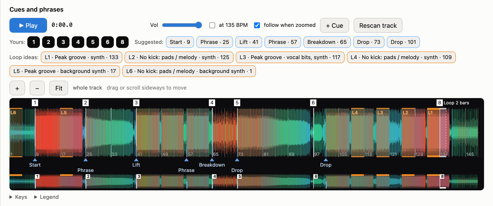
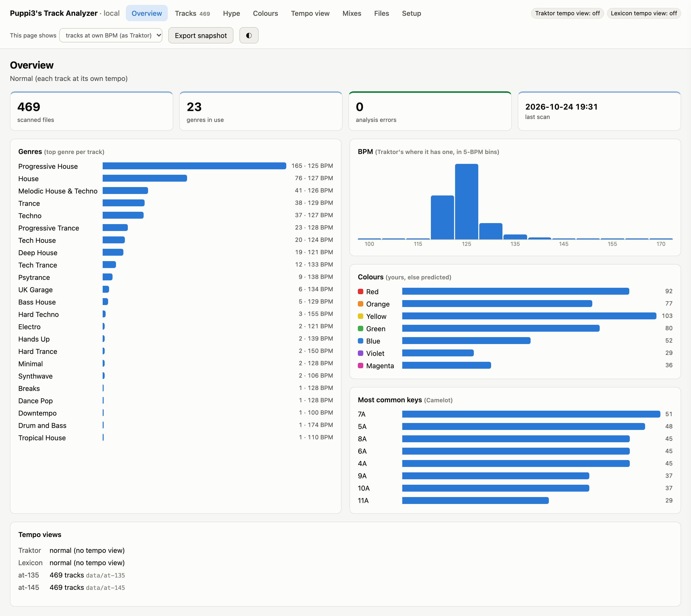
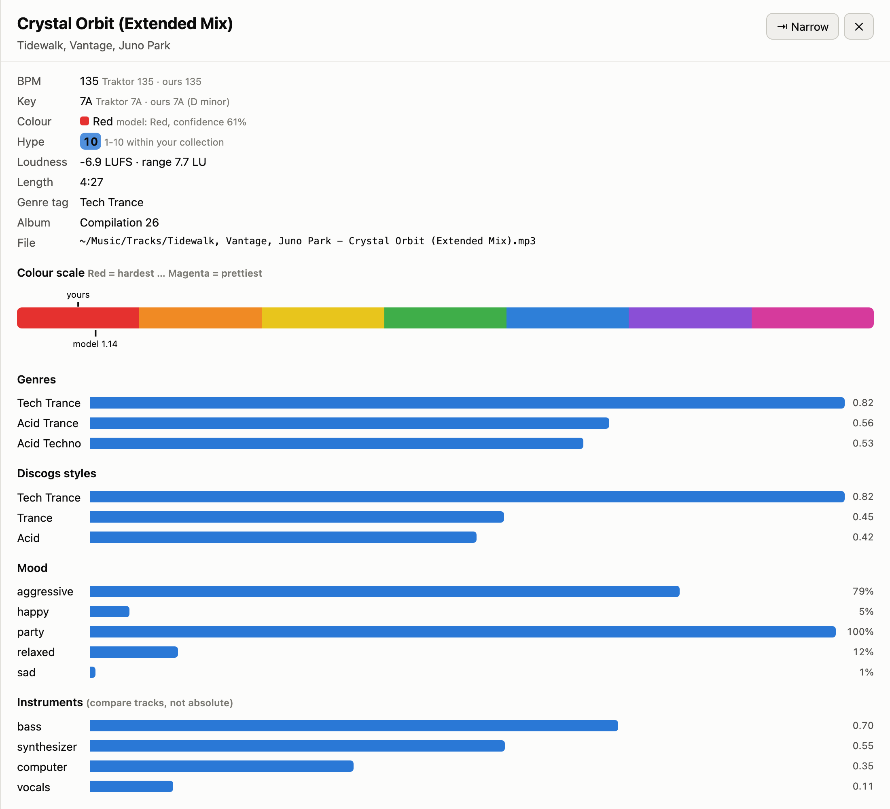

How to use Puppi3's Track Analyzer
Everything happens in a web page on your own computer: scanning, colours, hype, cue points, beat grids and writing it all into Traktor, each with a preview first and an Undo after. Prefer a terminal? Every button has a command, in Command line. Installation is in README.md.

Open the web page
- On a Mac: double-click
Start Puppi3's Track Analyzer.commandin the project folder. The first time, right-click it and choose Open (macOS asks once about apps from the internet). It installs whatever is missing, then opens the page in your browser. - On Linux: run
./"Start Puppi3's Track Analyzer.command"from a terminal in the project folder. - The page lives at
http://127.0.0.1:8766/and runs only on this computer; no audio leaves it. Close the Terminal window (or press Ctrl-C in it) to stop it.

The tabs
| Tab | What it's for |
|---|---|
| Overview | Your collection at a glance: genres, BPM, colours, keys. Click a bar, column or tile to list those tracks. |
| Tracks | Search, filter and sort every track. Click one for its panel: analysis, waveform, cue points, beat grid, and what mixes well with it. |
| Hype | Tracks by hype (1–10), filtered by colour, BPM and key. |
| Colours | What your colours mean, and the tracks whose sound disagrees with the colour you gave them. |
| Tempo view | Your catalogue as heard at the tempo you play at (once you've scanned one). |
| Mixes / Files | Saved analyses of your recorded mixes, and other saved results. |
| Setup | A checklist from a fresh install to everything in Traktor, with a button for each step. |
At the top of every tab, Traktor tempo view and Lexicon tempo view say whether a tempo view is loaded there right now (see At your play tempo). The This page shows menu switches only what the page shows, never Traktor. Export snapshot saves every tab as one HTML file to keep or send; it can't change anything. ◐ switches light and dark.
How changes are made
Browsing changes nothing. The page only writes when you press a button that says so, and every change to your files or Traktor goes the same way:
- Preview… shows how many tracks change, with examples, and changes nothing.
- Write it makes the change. Traktor's collection is backed up first.
- Undo puts it back, as long as Traktor hasn't saved its collection since (it does when it quits).
Traktor rewrites its collection when it closes, which would undo the change, so the page refuses to write while Traktor is open. Previews work either way, and the dialog offers Check again once you've quit.
Scanning, learning your colours and cues, checking beat grids, scanning a tempo view, and browsing every tab. They only read Traktor's files.
Long steps (a scan, training) run in the background: a progress bar and the live log show on the Setup tab and in a bar at the top of every tab, so you can keep browsing. Stop is safe; a scan keeps what it has done and carries on from there next time.
First time: the Setup tab
Work down the Setup tab. Each step shows whether it's done, what it needs, and the command it runs.
- Analysis models: Download, once (a few hundred MB).
- Your music, scanned: Scan Traktor's collection, or type a folder and press Scan folder. About 10–15 minutes per 500 tracks the first time; later scans only do new and changed files. Hype scores are worked out at the end.
- Learn from your own Traktor work (optional): Your colour scale → Learn your colours learns your colour-coding from the tracks you've already coloured (needs 30), and Your cue points → Learn your cue points learns where you put cues and loops (needs 30 tracks with 3+ of your own cues). Until you train them, a starter scale and starter cue model are used.
- Extra tools (optional): ffmpeg (loops, samples, exact MP3 timing) and Rubber Band (the tempo view). With Homebrew, the page installs them; without it, it shows the command to run.
- Into your files and Traktor: the writers, each with Preview… first. See I bought new tracks and Genres.
Everyday tasks
I bought new tracks
- Add them to Traktor, let Traktor analyse them, then quit Traktor.
- On the Setup tab, Colour new tracks → Preview…. It analyses the new tracks first (10–20 seconds each), then lists what it would set, e.g.
Track.mp3: no colour → Orange. Press Write it. Colours you set yourself are never changed. - Optional, genres: Genre tags in your files, then Genres, colours and Smartlists in Traktor (see Genres).
- Optional, hype: Hype in Traktor's Comment 2. It updates every track, because new tracks can shift the ranking a little.
- Open Traktor and check the new tracks. Changed your mind? Before opening Traktor, Undo the last change to Traktor at the bottom of the Setup tab.
I recoloured a bunch of tracks
- Quit Traktor, so the collection is saved.
- Setup tab, Your colour scale → Train again (Learn your colours the first time). About a minute.
- The Colours tab then shows the new profile and how well the scale fits (see Reading the Colours tab).
Checking my colours for mistakes
- On the Colours tab, Tracks that disagree with their colour lists your colour (Yours) next to what the track Sounds like, how many colours apart they are (Gap) and how sure the model is (Confidence). These are judged by a model that never saw that track's colour.
- Listen to the tracks at the top in Traktor, and recolour the ones you agree are off.
- Or let the app recolour only the clearest cases, marked over threshold (a gap of 2.5 colours or more, and tracks placed there really had that colour or a neighbour 75% of the time or more): quit Traktor, then Recolour them in Traktor… (also on the Setup tab as Recolour clear disagreements).
- A track you want left as it is, whatever the model says: hold its colour (below). It's then marked kept and never recoloured.
- Then Train again, as in I recoloured a bunch of tracks.
Understanding my collection
- Overview for the big picture. Click any bar to see those tracks.
- Tracks to find something: search artist, title, file or album, filter by genre, colour, BPM range or key (mixes with it shows every key that mixes with the one you pick), and click a column to sort.
- Click a track for its panel. ⇤ Wide gives the waveform more room.

A track's panel: Traktor's BPM and key next to the analyzer's, your colour next to the model's, hype, and what the models hear. - Mixes well with, at the bottom of the panel: tracks in the same genre within 4% of its BPM, in a key that mixes with it. Untick same genre or change the BPM range to widen it.
- For a spreadsheet, open
data/collection.csvin Numbers, Excel or LibreOffice. Sort bycolor_positionto go from hardest to prettiest.
Keeping a track's genre or colour as it is
- On the Tracks tab, tick the tracks (the header box ticks every track shown) and choose Hold genre or Hold colour. Or use the switches in a track's panel.
- From then on the genre tags, Traktor writes, recolouring and the tempo view leave that genre or colour alone. Holding writes nothing at the time. Release it the same way; the Held filter lists them.
Cue points like mine
The picture at the top of this guide is a track's Cues and phrases section: your hot cues on top, suggestions below, loop ideas named by what plays in them.
- Teach it once: Setup tab, Your cue points → Learn your cue points. It listens to the tracks you cued yourself first (about 13 minutes the first time). Then Listen to the other tracks so they get suggestions too.
- Open a track: Cues and phrases shows its waveform (lows red, mids green, highs blue), your cues numbered on top, suggested ones below (Start, Phrase, Breakdown, Drop…) and up to six loop ideas. Zoom with + / − or pinch, down to a single beat.
- Listen first: ▶ Play and the pads jump to your cues and the suggestions (Space, 1-8, ←/→ for a bar, shift+←/→ for a phrase). The ▶ buttons in the list let you compare your cue with a proposed correction (press ⏸ to stop).
- Tick the cues (and any yellow corrections of your own cues) you want, then Approve ticked. A correction's list lets you pick a different bar the model found instead of its proposal (★). To put one of your other cues on a suggested cue instead, use move my cue here… next to that suggestion. Each loop has a length menu, set to the length you'd likely give it (learned from your own loops). Press C while it plays to set a new cue on the nearest beat, and the ✕ on a pad to delete that cue from Traktor. Approving writes nothing yet; the Tracks filter Cues approved, not written to Traktor yet lists them.
- Save sample on a loop idea saves exactly that loop as a WAV in Traktor's sample folder, ready for a Remix Deck.
- Quit Traktor and press Write to Traktor… (in the track's panel or at the top of the Tracks tab). It lists what will change first, then writes, with a backup and an Undo button. New cues only fill free hot-cue slots; your cues only move where you ticked a correction, and are only deleted where you ticked that.
- Train again on the Setup tab after cueing more tracks.
Beat grids that sit on the kicks
Cue suggestions, loops and samples all trust Traktor's beat grid. To check every grid once (about 3 minutes, later only new and changed ones), press Check the beat grids on the Setup tab.
- In the Tracks tab, filter on Grid off the kicks or drifting and open a track. Its Beat grid section says how far the kick lands from the grid lines.
- Listen: ▶ Click on the grid now and ▶ Click on the moved grid loop a few bars with a click on each grid line. Adjust the amount if needed, then Approve, or The grid is right to stop it being proposed.
- If it says the track's stem file is off, remake the stem first: Traktor uses one grid for both. "BPM drifts" means Traktor's BPM is slightly off; fix that in Traktor, moving the grid won't.
- Quit Traktor and press Write grid fixes to Traktor…. It lists what moves, makes a backup, and moves each grid together with that track's cues and loops, so they stay on the beat. Undo puts it back.
Finding hype tracks
- Most hype first: the Hype tab. Tick least hype first for the chill end.
- For the next track in a set: type the BPM (within 4%, change it beside the box) and a key in Mixes with key, e.g.
8A. Pick a colour to stay within one. - Underrated tracks: tick gems: very hype (8+) but rated 4★ or less, or played at most once. Worth a listen and maybe a fifth star.
- In Traktor: quit Traktor, press Write to Traktor's Comment 2…, then show the Comment 2 column in Traktor's track list (right-click the column header) and sort by it. Your own text in Comment 2 stays in front. Take it out… on the Setup tab removes only the Hype part again.
Genres for Traktor and Navidrome
- Scan first, so new tracks have genres: Setup tab, Scan Traktor's collection.
- Genre tags in your files → Preview…, then Write it. With close runner-up genres too ticked, a track between two genres gets both, e.g. "Acid Trance; Hard Trance". Navidrome, Lexicon and other players pick the tags up on their next scan. Put original tags back… undoes it.
- Quit Traktor, then Genres, colours and Smartlists in Traktor → Preview… and Write it. It sets the genres, gives uncoloured tracks their predicted colour (untick colours too to skip that) and builds a Genres (Track Analyzer) Smartlist folder.
Edited the genre rules (dj_genres.json)? Working the genres out again from the saved analysis is a terminal step for now: regenre.
Tested with Traktor Pro 4.5: Traktor opens and saves a collection edited by this app, and the genre Smartlists show the right tracks. If something ever looks wrong, quit Traktor and press Undo the last change to Traktor.
Hearing my catalogue at my play tempo
If you play a set at one tempo with key lock, this shows what the models hear there: every track is stretched to that tempo (pitch kept) and analysed again for genre, moods, colour and hype. Your normal results are never touched.
- Once: install rubberband (the time-stretcher) under Extra tools on the Setup tab.
- Scan your music normally first, then set the BPM of the Tempo view step (145 by default; any tempo works) and press Scan tempo view. About an hour the first time; later only new tracks. Each tempo is its own view.
- The Tempo view tab shows what changes: genres at own tempo next to genres at the view tempo, the most common changes, your colours at that tempo, and the tracks that turn hardest, turn prettiest, and gain the most hype.
- Browse it: set This page shows to all tracks at 145 BPM, and the Overview, Tracks and Hype tabs show the view. In a track's panel, at 145 BPM plays the track stretched, as the view hears it.
- Optional, switch Traktor to the view: quit Traktor, Load into Traktor… (Tempo view or Setup tab), preview, write. Traktor then shows the genres heard at that tempo, your colour moved by how far the model thinks the track shifts, and the view's hype in Comment 2; the genre Smartlist folder becomes Genres @145 (Track Analyzer). The label at the top of the page shows it's loaded.
- Switch back with Switch Traktor back to normal… on the Tempo view tab (or Switch Traktor back… on Setup), Traktor closed. Cue points, plays, History and new tracks from meanwhile all stay; a genre, colour or Comment 2 you changed yourself meanwhile is kept.
- Lexicon too: open Lexicon, turn on Settings → Integrations → Local API once, and tick Lexicon too on the Setup tab before loading. Its genre, colour, comment and Energy switch to the view. While it's loaded, don't sync Lexicon → Traktor; syncing to your USB is fine (sync again after switching back).
Keep in mind: the genre, mood and instrument models learned from millions of tracks, each at the tempo it was released at. Almost no house was released at 145, so stretched to 145 a rolling house track sounds to them like the trance and psytrance they did hear at that tempo. Read the view as how the models hear the sped-up track, not as facts. Psytrance, the worst case, is held back: in the view, psy only counts as much as the track already had at its own tempo. Rubber Band also isn't Traktor's own stretcher, so it sounds close but not identical. While a view is loaded in Traktor, the other Traktor writers and colour training refuse to run; switch back first.
My recorded mixes
The Mixes tab shows a recorded set's genre and mood, a loudness timeline, a check of the tracklist against Traktor's history (key heard vs Traktor's, the tempo each track was played at, key lock), and clip ideas. Analysing the recording is a terminal step for now (recorded mixes); save the result in logs/ and it appears on the tab, or drop the saved file onto the tab.
Asking a local LLM about my music
- Connect LM Studio or Open WebUI once (README section 8).
- Ask things like:
- "What could I play after Insomnia?"
- "Pretty tracks around 124 BPM that mix with 8A"
- "How many Red tracks do I have per genre?"
After updating the app
- Double-click
Start Puppi3's Track Analyzer.commandagain: it installs new dependencies before opening the page. - Check the Setup tab: if a new model is needed, Analysis models offers the download.
- Press Your colour scale → Train again. The first run after an update may fill in new data for every track (about 10–15 minutes); later runs take a minute.
- If the update notes say the genre list changed or everything should be analysed again, those are terminal steps.
Reading the page
- Colours: a ? after a colour means it's predicted, not set by you. Confidence is how often tracks placed at that spot really had that colour, on tracks the model hadn't seen; most are 0.2–0.3, because neighbouring colours are close to a coin flip from the sound alone. The ends of the scale are clearly apart.
- Hype is 1–10 within your own collection: 10 = more hype than 90% of your tracks. Half the euphoric "rave" sound (trance, hard trance, hands-up, hardstyle rather than deep or tech house), half energy (loud, party, aggressive, not relaxed). It can shift a step when you add many tracks.
- BPM and key: Traktor's where it has them (you may have fixed the grid by hand), ours beside them. In the Tracks list, a dimmed key in brackets, like 5A (8B), is the key the analyzer heard, shown only when it disagrees with Traktor's (hover for both). Our key agreed with Traktor's on about 57% of a test collection; neither is ground truth.
- Instruments come from a tagger trained on non-club music: compare tracks, don't read the numbers as absolute amounts.
Reading the Colours tab
- Average error per colour, within one colour, exactly right: how well the scale fits, tested on tracks it didn't learn from. The error is worked out per colour and averaged, so a small colour like Violet counts as much as Red. On the test collection the scale was 1.17 colours off on average, against 1.63 for guessing the middle colour for every track.
- Profile per colour: the average of each measurement per colour, darker = highest of the row. ρ is how strongly it moves with your scale: + means more of it toward Magenta, − toward Red. Around ±0.3 or more is a real pattern; under ±0.1 is basically nothing. plays and purchased describe how you use the tracks, not how they sound.
- Where in a set: from Traktor's History, how often each colour is played in the first, middle and last third of a session.
- Playlists: your playlists from hardest to prettiest by average colour; Stands out marks a colour that appears there at more than twice its usual rate.
- Artists: whether one artist's tracks get similar colours (closer than random means yes), and the average colour of your most frequent artists.
How it works
Everything runs on your computer; no audio leaves it. The technical details are in README.md.
1. Listening to each track
scan decodes every file once and measures it with Essentia, an open-source audio library:
- BPM and key, rounded to whole BPM and shown as Camelot. Where Traktor has its own BPM and key, those are used for searching and mixing; ours fill the gaps. Traktor's BPM is never changed, and its beatgrid only moves when you approve a fix (beat grids).
- Loudness and how the energy rises and falls through the track.
- Style: two AI models trained on Discogs (one hears 400 styles, the other 519) listen to the main, loudest part of the track and their opinions are blended.
- Mood, instruments and vocals: smaller models on top say how aggressive, happy, party, relaxed or sad it sounds, which instruments they hear and whether there are vocals.
The results are saved in cache.db, so each track is only analysed once (until its audio changes or it moves). Files over 12 minutes are treated as DJ mixes and get a timeline instead.
2. From styles to DJ genres
Discogs styles are too fine-grained and named for record shops, so a rule list (dj_genres.json) turns them into DJ genre names. Each rule says which styles count and what BPM range fits; a track slightly outside the range loses points gradually instead of being ruled out. The top three become the track's genres. Edit the rules and regenre redoes the genres in seconds from the saved analysis.
3. Learning your colours
colors train looks at the tracks you've already coloured in Traktor and learns which sounds go with which colour, treating Red to Magenta as a scale. Several combinations of measurements are tried and the one that guesses best on tracks it hasn't seen is kept. On a test collection of about 470 tracks it was off by about one colour on average (versus 1.6 for always guessing the middle colour): it reliably tells Red from Magenta, but neighbouring colours are close to a coin flip. That's why it only fills in missing colours and never overwrites yours unless you ask.
4. Hype
Half "rave sound" (how much the style model hears Trance, Hard Trance, Hands Up, Hardstyle or Tech Trance rather than deep styles) and half energy (loudness, party and aggressive moods, minus relaxed). Each part is ranked within your own collection, so Hype 8 means "more hype than about 70–80% of my tracks", not an absolute value.
5. The tempo view
Played at 145 BPM with key lock, a 124 BPM house track sounds different. tempo scan stretches each track to the target tempo with Rubber Band (pitch kept, like Traktor's key lock) and runs the same analysis again, stored separately in data/at-145/. Your colour is shifted by how much the colour model thinks the track changes, not replaced.
6. Writing to Traktor
Traktor keeps its own copy of track info in collection.nml. The app makes small text edits there (genre, colour, Comment 2 and a Smartlist folder) rather than rewriting the file, so everything else stays byte-for-byte the same. A backup is taken first, and --undo refuses if Traktor changed the file since, so it can't throw away your newer work.
Undo and safety
| If you… | Undo in the page | From a terminal | Notes |
|---|---|---|---|
| Wrote genres, colours, recolourings, cues or grid fixes into Traktor | Undo in the dialog, or Undo the last change to Traktor (Setup) | traktor --undo | Restores collection.nml from the backup taken before the change; again to step further back. Traktor must be closed. Refuses if Traktor saved the file since (only the terminal's --force restores anyway, and loses those changes). The page's Undo after writing cues or grids also brings your approvals back. |
| Wrote hype into Comment 2 | Take it out… (Setup) | hype --traktor --remove | Takes only the Hype part out of Comment 2; your own text stays. |
| Loaded a tempo view | Switch Traktor back… | tempo native (add --lexicon for Lexicon) | Puts back your genres, colours, Comment 2 and genre Smartlists; everything else Traktor saved meanwhile stays. In Lexicon: genre, colour, comment and energy where they still hold the view's value. Last resort for Lexicon: the copies in lexicon-backups/. |
| Wrote genre tags into your files | Put original tags back… (Setup) | untag | Restores the genre/BPM/key tags each file had before its first change. |
What the app never does:
- change a colour you set yourself (unless you pass
--overwrite-colorsin a terminal) - touch cue points or beatgrids you didn't approve a change to, play counts, your own playlists or your Comment field in Traktor
- write to Traktor while it's running
- save a Traktor collection that wouldn't be valid XML
Where things are stored
Everything lives in data/:
| File | What |
|---|---|
collection.csv | The spreadsheet |
collection.db | The scanned collection (what the CSV and LLM tools read) |
cache.db | Saved analysis per track, so nothing is analysed twice |
my_colors.joblib | Your trained colour model |
my_genres.joblib | Your own trained genres, if you used train |
dj_genres.json | Optional: your edited copy of the genre rules, used instead of the app's |
models/ | The downloaded AI models |
at-145/ | The 145 BPM view (one folder per tempo, e.g. at-140/): its own cache.db, collection.db, collection.csv and collection.nml |
tempo-loaded.json | Only while a tempo view is loaded in Traktor: your own values, so tempo native can put them back. Don't delete it |
lexicon-backups/ | A copy of Lexicon's library taken before every tempo load --lexicon / native --lexicon (newest 10). Last resort: quit Lexicon, copy one over ~/Library/Application Support/lexicon/main.db, delete main.db-wal and main.db-shm |
tempo-loaded-lexicon.json | Only while a tempo view is loaded in Lexicon: your Lexicon values, for tempo native --lexicon. Don't delete it |
Traktor backups sit next to collection.nml in ~/Documents/Native Instruments/Traktor <version>/, named collection.nml.before-track-analyzer-<date-time>.
A track is only re-analysed if the file's audio changes, or it moves or gets renamed. Tagging, by this app or another tagger, doesn't count.
When something goes wrong
| You see | What to do |
|---|---|
| "Traktor is running. Quit Traktor first" | Quit Traktor fully (⌘Q), then press Check again in the dialog (or run the command again) |
| "No colour model yet" | Setup tab: Your colour scale → Learn your colours (colors train) |
| "…from before confidence was measured properly. Retrain it" | Setup tab: Your colour scale → Train again (colors train) |
| "The 145 BPM view is loaded in this Traktor collection" (or another tempo) | Switch back first: Switch Traktor back… (tempo native), Traktor closed, then try again |
| "Rubber Band isn't installed" | Setup tab, Extra tools: install rubberband, or brew install rubberband (Linux: sudo apt install rubberband-cli, version 3.0 or newer) |
| "Can't reach Lexicon's Local API" | Open Lexicon and turn on Settings → Integrations → Local API, then run the command again |
| "Traktor is set to write tags to your files" | In Traktor: Preferences → File Management, turn off writing tags to files, quit Traktor, then tempo load again |
| Tracks drop out of the @145 genre Smartlists after loading them into a deck | Traktor read the file's own tags back in. A view loaded with an older version of the app doesn't prevent this: tempo native, then tempo load again (Traktor closed) |
| "No 145 BPM analysis yet" (or another tempo) | Scan that tempo first: Setup tab, Tempo view step (tempo scan --bpm …) |
| "Style models missing" | Setup tab: Analysis models → Download (setup). No command downloads models by itself, so setup has to come first |
"MAEST isn't downloaded" at the start of a scan, or genre_basis says "EffNet" without MAEST | Genres are using the EffNet model only. Run setup (without --no-maest) and scan again with --rescan. If it still says this after setup, the reason is in genre_basis.maest: paste the output to Claude |
| An error about more than 2 channels | It's a surround (5.1) file. With ffmpeg installed (brew install ffmpeg, Linux: sudo apt install ffmpeg) it's mixed down to stereo automatically; scan again |
| "listed but missing" during a scan | Traktor knows tracks whose files moved or are on a disconnected drive. Reconnect the drive, or relocate them in Traktor |
| A run seems slow | The first run after setup or an update analyses every track once (10–15 min, a --rescan about 30). Stop (or Ctrl-C) is safe; it resumes where it stopped |
| Smartlists look wrong in Traktor | Quit Traktor, Undo the last change to Traktor (traktor --undo), then report what you saw |
| Anything else | Copy the log from the Setup tab, or rerun the command with 2>&1 | tee logs/error.txt, and include it when you report it |
Command line
Every button in the page runs a command, shown while it runs, so you can do the same from a terminal (Terminal, or VS Code's). A few things are terminal-only for now: analysing a recorded mix, cutting clips from its video, working out genres again after editing the rules, a full re-analysis, and your own genres from example folders.
- Run every command from the project folder in Terminal (or VS Code's terminal):
(or wherever you put it)
cd ~/puppi3s-dj-tools/track-analyzer
- Every command starts with
uv run dj-track-analyzer, for exampleuv run dj-track-analyzer stats. The copy buttons on this page copy the whole command. - Try
--dry-runfirst on anything that changes files. It shows what would happen and changes nothing. - To keep a copy of the output, add
2>&1 | tee logs/something.txtto the end of a command. Handy when asking for help.
traktor, colors apply, colors review --apply, hype --traktor, tempo load and tempo native. Traktor rewrites its collection when it closes, which would undo the changes, so the app refuses to run these while Traktor is open (their --dry-run works either way).
scan, analyze, stats, hype (without --traktor), colors train, colors explain and colors review (without --apply), regenre, and tempo scan, report, refresh, export, nml and status only read Traktor's files.
Tasks from a terminal
The same tasks as above, as commands.
I bought new tracks
- Add them to Traktor and let Traktor analyse them.
- Quit Traktor.
- Preview the colours. This analyses the new tracks first, about 10–20 seconds each;
exampleslists what it would set, e.g.Track.mp3: no colour → Orange.uv run dj-track-analyzer colors apply --dry-run
- Set them:
uv run dj-track-analyzer colors apply
- Optional, genres too: preview, write the file tags, then update Traktor and its genre Smartlists.
uv run dj-track-analyzer tag --multi --dry-run
uv run dj-track-analyzer tag --multi
uv run dj-track-analyzer traktor
- Optional, hype scores. This updates Comment 2 for all tracks, because new tracks can shift the ranking a little. (If a tempo view is loaded, switch back first with
tempo native.)uv run dj-track-analyzer hype --traktor
- Open Traktor and check the new tracks. Change any colour you disagree with; your own colours are never overwritten.
- Changed your mind? Before opening Traktor again:
uv run dj-track-analyzer traktor --undo
I recoloured a bunch of tracks
- Quit Traktor, so the collection is saved.
- Retrain. About a minute after the first time.
uv run dj-track-analyzer colors train 2>&1 | tee logs/colors.txt
- Optional: see whether the colour profile changed.
uv run dj-track-analyzer colors explain
Checking my colours for mistakes
- List the tracks whose sound disagrees most with the colour you gave them:
uv run dj-track-analyzer colors review
- Listen to the tracks at the top of the list in Traktor, and recolour the ones you agree are off.
- Or let the app recolour only the clearest cases. A track qualifies when the model puts it at least 2.5 colours away from yours, and tracks it placed at that spot really were that colour or a neighbour at least 75% of the time. Those show
meets_apply_threshold: true.- Preview. This lists only the tracks that would be recoloured:
uv run dj-track-analyzer colors review --apply --dry-run
- Quit Traktor, then:
It asks about each track: y recolours it, n keeps your colour, k keeps it and never asks about that track again, a recolours all the rest, c cancels without changing anything. Add
uv run dj-track-analyzer colors review --apply
--yesto skip the questions. - Stricter:
--min-gap 3or--min-confidence 0.85. Undo withtraktor --undobefore you open Traktor again (afterwards it refuses unless you add--force, which loses what Traktor saved).
- Preview. This lists only the tracks that would be recoloured:
- Then retrain, as in I recoloured a bunch of tracks.
Understanding my collection
- The web page itself: (
uv run dj-track-analyzer web
--export set.htmlsaves a snapshot instead). - What each colour means (see reading
colors explain):uv run dj-track-analyzer colors explain
- Tracks per genre, keys, BPM spread, tracks per colour:
uv run dj-track-analyzer stats
- The spreadsheet: On Linux:
open data/collection.csv
xdg-open data/collection.csv.
Holding a genre or colour
By part of the file name; hold alone lists them, --release takes one off:
uv run dj-track-analyzer hold --genre "part of the name"
Cue points and beat grids
Learning and listening work from a terminal; approving needs the page. Writing what you approved:
uv run dj-track-analyzer cues train
uv run dj-track-analyzer cues scan
uv run dj-track-analyzer cues show "part of the name"
uv run dj-track-analyzer cues apply --dry-run
uv run dj-track-analyzer cues apply
uv run dj-track-analyzer grids check
uv run dj-track-analyzer grids show "part of the name"
uv run dj-track-analyzer grids apply --dry-run
uv run dj-track-analyzer grids apply
apply needs Traktor closed; undo with traktor --undo.
Finding hype tracks
- Most hype first (add
--leastfor the chill end):uv run dj-track-analyzer hype
- For the next track in a set: tracks within 4% of 126 BPM that mix with 8A, most hype first. Add
--colour Yellowto stay within one colour.uv run dj-track-analyzer hype --bpm 126 --key 8A
- Underrated tracks: very hype (8+) but rated 4★ or less, or played at most once. Worth a listen and maybe a fifth star.
uv run dj-track-analyzer hype --gems
- In Traktor: Traktor closed run the command below (
--dry-runfirst to preview), then show the Comment 2 column in Traktor's track list (right-click the column header) and sort by it.uv run dj-track-analyzer hype --traktor
Genres for Traktor and Navidrome
- Analyse new or changed tracks:
uv run dj-track-analyzer scan --traktor
- Check the
genres_multicolumn in collection.csv. That's what will be written. - Preview, then write the file tags. Navidrome picks them up on its next library scan.
uv run dj-track-analyzer tag --multi --dry-run
uv run dj-track-analyzer tag --multi
- Traktor closed Preview, then set the genres in Traktor and build the Genres (Track Analyzer) Smartlist folder:
uv run dj-track-analyzer traktor --dry-run
uv run dj-track-analyzer traktor
- To undo:
untagfor the files,traktor --undofor Traktor.
Edited dj_genres.json (or the app's genre list changed in an update)? Work out every track's genres again from the saved analysis, in seconds, then check the CSV and continue from step 3:
uv run dj-track-analyzer regenre
Tested with Traktor Pro 4.5: Traktor opens and saves a collection edited by this app, and the genre Smartlists show the right tracks. If something ever looks wrong, quit Traktor and run traktor --undo.
Hearing my catalogue at my play tempo
If you play a set at one tempo with key lock, this shows what the models hear there: every track is stretched to that tempo (pitch kept) and analysed again for genre, moods, colour and hype. Your normal results are never touched.
Any tempo works. The default is 145. Add --bpm 140 (or any tempo) to scan, report, export, nml, refresh and load; each tempo is its own view in data/at-<bpm>/. Only one can be loaded at a time, and native switches back whichever one is. The steps below use the default.
- Once: install Rubber Band, the time-stretcher.
On Linux:
brew install rubberband
sudo apt install rubberband-cli(version 3.0 or newer). - Make sure new tracks are scanned normally first, then analyse at your tempo. About an hour the first time; resumable, and later runs only do new or changed tracks.
uv run dj-track-analyzer scan --traktor
uv run dj-track-analyzer tempo scan 2>&1 | tee logs/tempo-scan.txt
- See what changes (see reading
tempo report):uv run dj-track-analyzer tempo report
- Optional, look at it without touching Traktor: a spreadsheet, or a standalone copy of your collection. Both go to
data/at-145/(at-<bpm>/for other tempos).uv run dj-track-analyzer tempo export
uv run dj-track-analyzer tempo nml
- Optional, switch Traktor to the view. Quit Traktor, preview, then load:
uv run dj-track-analyzer tempo load --dry-run
Traktor then shows, per track: the genres heard at the view tempo; your colour moved by how far the model thinks the track shifts (uncoloured tracks stay uncoloured); the view's hype in Comment 2. The Genres (Track Analyzer) folder is swapped for Genres @145 (Track Analyzer), and the clock is set to the view tempo (tracks follow it only with Sync on and the clock as master).uv run dj-track-analyzer tempo load
- Switch back (Traktor closed). Cue points, plays, History and new tracks from while the view was loaded all stay. If you changed a genre, colour or Comment 2 yourself in the meantime, your change is kept and listed under
kept. The clock always goes back to your tempo.uv run dj-track-analyzer tempo native
- Optional, Lexicon too. Open Lexicon, turn on Settings → Integrations → Local API once, then add
--lexicon. Lexicon's genre, colour, comment ("Hype NN" after your text) and Energy (the view's hype, 1–10) switch to the view;nativeputs Lexicon's own energy back, and a Genres @145 (Track Analyzer) smartlist folder appears. If Traktor already has the view, only Lexicon is switched. While it's loaded, don't sync Lexicon → Traktor or import from Traktor; syncing to your USB is fine (sync again after switching back).uv run dj-track-analyzer tempo load --lexicon --dry-run
uv run dj-track-analyzer tempo load --lexicon
uv run dj-track-analyzer tempo native --lexicon
- While a view is loaded,
hype,statsandexportshow the view (hype at the view tempo). Add--nativeto see each track at its own tempo. - Changed
dj_genres.jsonor retrained colours? Redo the view's genres, colours and hype from the saved analysis (seconds):uv run dj-track-analyzer tempo refresh
- Not sure which is loaded?
uv run dj-track-analyzer tempo status
One track, and recorded mixes
uv run dj-track-analyzer analyze "/path/to/track.mp3"
To get the path: in Finder, hold Option, right-click the file and choose Copy "…" as Pathname. On Linux, drag the file into the terminal window. Keep the quotes around it. Files over 12 minutes are treated as DJ mixes: they get a timeline in 2-minute steps and a readable summary after the JSON (--segments 60 for 1-minute steps).
Checking a recorded mix against what you played: add --tracklist to a Traktor recording. It finds that session's history file, places each track in the recording, and shows per track the key Traktor has against the key heard, the tempo you played it at, whether key lock was on, and names the mix by how it sounds as played, with the speed-up and your mixing (stems, layers, effects) counted. Only the models' habit of calling almost any sped-up track psytrance is held back, as in the tempo view, so scan the tracks first. With tempo scan at about the tempo you played, it also lists what your mixing pushed up or down. For a recording Traktor didn't name, add --start 22:00:00 (when it began).
Posting it as a video: add --chapters --offset 0:14 (how far into the finished video the first track starts: check it in the video itself) for YouTube chapters to paste into the description, and --highlights for two suggested 40-second clips, in video times (--highlights 5 for five, ranked). Then clips <analysis>.json --video final.mp4 makes 720p previews of them to watch, ranked by the audio and by how much moves on screen, and --pick 1 4 makes the ones you choose at full quality next to the video.
After updating the app
- Install new dependencies, then download any new models:
uv sync
uv run dj-track-analyzer setup
- Run
colors explainorcolors train. The first run fills in new data for every track (about 10–15 minutes); later runs take seconds. - If the genre list changed, redo the genres from the saved analysis (seconds), then tag and sync as in Genres:
uv run dj-track-analyzer regenre
- If the update notes say so, re-analyse everything (about half an hour per 500 tracks on an M1 Pro):
uv run dj-track-analyzer scan --traktor --rescan 2>&1 | tee logs/scan.txt
All commands
Each is run as uv run dj-track-analyzer <command>. Anything marked in colour changes your files or Traktor.
| Command | What it does | Changes |
|---|---|---|
setup | Downloads or checks the models | Model files only |
analyze <file> | Full analysis of one track, or a timeline for a mix over 12 min | Nothing |
scan --traktor | Analyses every track in your Traktor collection that's new or changed | App database + CSV |
scan <folder> | The same for a folder (both can be combined) | App database + CSV |
stats | Summary of the scanned collection | Nothing |
export [file] | Rewrites the CSV (default data/collection.csv) | CSV |
tag | Writes the genre (optionally BPM/key) into the audio files' tags | Your files undo: untag |
untag | Puts back the tags files had before tag | Your files |
regenre | Genres of every scanned track again from the saved analysis, after editing dj_genres.json (seconds) | App database + CSV |
traktor | Genres, colours for uncoloured tracks, and the genre Smartlists into Traktor | Traktor undo: traktor --undo |
colors train | Learns your colour scale from your coloured tracks | App files only |
colors review | Tracks whose sound disagrees most with the colour you gave them | Nothing; with --apply: Traktor |
colors explain | What each colour means: sound, playlists, sets, artists | Nothing |
colors apply | Analyses new Traktor tracks and colours the uncoloured ones | Traktor undo: traktor --undo |
hype | Lists tracks by hype (1–10), with filters | App database |
hype --traktor | Writes "Hype NN" into Comment 2, after your own text there | Traktor undo: hype --traktor --remove |
tempo scan | Analyses every scanned track stretched to your play tempo (145 unless --bpm), key lock | Its own data in at-<bpm>/ |
tempo report | What changes at the view tempo: genres, colours, hype | Nothing |
tempo export / tempo nml | The view as a spreadsheet / as a standalone collection.nml | Files in at-<bpm>/ |
tempo load | Switches Traktor's genres, colours, Comment 2, genre Smartlists and clock to the view; --lexicon does Lexicon too | Traktor undo: tempo native |
tempo native | Switches Traktor (and with --lexicon, Lexicon) back to your normal values | Traktor |
tempo refresh | Redoes the view's genres, colours and hype from its saved analysis (seconds) | Its own data in at-<bpm>/ |
tempo status | Which view is loaded, and which views exist | Nothing |
styles | Lists the 400 Discogs style names and checks dj_genres.json | Nothing |
train <folder> | Optional: teach your own genre names from example folders | App files only |
serve | Runs the MCP server for LM Studio (--http for Open WebUI) | Nothing |
web | Opens everything in a web page on this computer: collection, hype, colours, tempo view, saved mix analyses. Hold genres and colours, approve cues, save loops, and on the Setup tab run the other commands with buttons (writers preview first) | Only what you press: holds, cue approvals and samples; the Setup tab's writers change what their command changes |
cues train / cues scan / cues show | Learns where you put cues and loops; listens to your tracks bar by bar; suggestions for one track | App database and model file |
cues apply | Writes the cues and corrections you approved in the web page into free hot-cue slots | Traktor undo: traktor --undo |
grids check / grids show / grids apply | Checks that Traktor's beat grids sit on the kicks; one track's reading and its stem file; moves the grids you approved in the web page, with their cues | apply: Traktor undo: traktor --undo |
hold | Lists the tracks whose genre or colour the writers leave alone; --genre / --colour "name" adds, with --release removes | The hold list only |
Useful options
| Option | Works with | What it does |
|---|---|---|
--dry-run | tag, untag, traktor, colors apply, colors review --apply, hype --traktor, tempo load, tempo native | Preview only, changes nothing |
--nml <path> | scan, traktor, colors, hype, tempo | Use a different collection.nml (default: the newest Traktor folder) |
--rescan | scan, tempo scan | Re-analyse everything, even unchanged files (slow) |
--exclude <folder> | scan | Leave a folder out (repeat for several) |
--include-recordings | scan | Also scan your Traktor recordings and samples (skipped by default) |
--csv <file> | scan | Write the spreadsheet somewhere else |
--write-tags genre | scan | Tag the files right after scanning (same fields as --fields) |
--workers 3 | scan, colors train / explain / apply, tempo scan | Fewer or more parallel workers (default: half your CPU cores, at most 5) |
--pick 1 4 / --video | clips | Cut the chosen clip suggestions (numbers, or ranges like 20:30-21:10) from the finished video at full quality; without --pick, 720p previews of all of them in /tmp/clip-previews/ |
--height 1440 / --bitrate 16M / --out / --previews | clips | Size and bitrate of the picked clips, and where clips and previews go |
--segments 60 | analyze | Timeline step in seconds |
--tracklist [history.nml] | analyze | Check a recorded mix against Traktor's history of that session (found automatically if no file given) |
--chapters --offset 0:14 | analyze --tracklist | YouTube chapter lines, for a video where the first track starts 14 seconds in (read it off the finished video) |
--highlights / --clip-length 40 | analyze (mix) | Suggest 2 (or N) of the best 40-second stretches for short clips, each ranked (#1 best); video times with --offset |
--json-only | analyze | For a mix, leave out the readable summary printed after the JSON |
--start 22:00:00 | analyze --tracklist | When the recording began, for recordings not named by Traktor |
--multi | tag | Two or three genres when a track sits between them: Acid Trance; Hard Trance |
--multi-ratio 0.7 / --max-genres 3 | tag --multi | How close a runner-up must score (share of the top score) / the most genres per track |
--fields genre,bpm,camelot | tag | Also write BPM and key. Fields: genre, bpm, key (Am…) or camelot (8A…), not both |
--min-score 0.3 | tag | Skip weak genre guesses (see genre_score in the CSV) |
--use-my-genre | tag | Write your own trained genres instead |
--undo | traktor | Restore Traktor's collection from before the last change. Again to step further back |
--undo --force | traktor | Restore even though Traktor saved the collection since (loses those changes) |
--lexicon | tempo load, tempo native | Switch Lexicon too (Lexicon open, Local API on). Your Lexicon edits made meanwhile are kept on native |
--force | tempo load | Load the view even while Traktor is set to write tags to your files (it could write the view's genres into them) |
--smartlists-only / --no-smartlists | traktor | Only rebuild Smartlists / only update genres |
--no-colors | traktor | Don't set colours |
--color-min-confidence 0.3 | traktor | Only set the more reliable colour guesses |
--overwrite-colors | traktor | Also replace colours you set yourself. Not recommended |
--min-confidence 0.3 | colors apply | Only set the more reliable colour guesses (most are 0.2–0.3) |
--min-gap 2.5 / --min-confidence 0.75 | colors review --apply | Which disagreements get recoloured (these are the defaults) |
--yes | colors review --apply | Recolour them all without asking about each track |
--kept | colors review | Show the tracks you said to keep always. Add --forget "name" to let review suggest one again, or --keep "name" to add one yourself |
--no-deep | colors train | Skip the MAEST, mood and instrument features (faster, less accurate) |
--least / --gems | hype | Chill first / hype tracks with few stars or plays |
--colour Red, --bpm 126, --key 8A | hype | Filter by colour (yours, else predicted), BPM (±4%, change with --bpm-tolerance) and keys that mix with 8A |
--limit 50 | hype | Show more tracks (default 25) |
--remove | hype --traktor | Take the "Hype NN" part out of Comment 2 again |
--bpm 140 | tempo … (not native, status) | The tempo of the view (default 145). Each tempo keeps its own folder, e.g. at-140/ |
--out <file> | tempo export, tempo nml | Write somewhere else than at-<bpm>/ |
--limit 30 | tempo report | Tracks per list (default 15) |
--no-maest | setup | Skip the larger MAEST genre model (smaller download, slightly less accurate genres) |
--host 0.0.0.0 / --port 8765 | serve --http | Listen on your network (for Open WebUI in Docker or on another machine) / another port |
--export set.html | web | Save a read-only snapshot of the page as one file instead of opening it |
--logs <folder> / --no-open | web | Where the Mixes and Files tabs look for saved JSON (default logs/; repeat for several) / don't open the browser |
--json | colors explain, hype, tempo report | Raw numbers instead of tables |
Reading the terminal output
analyze (one track)
| Field | Meaning |
|---|---|
bpm | Tempo, as a whole number. bpm_confidence above 3.5 is very reliable. genre_bpm is Traktor's BPM, shown when genres were judged by it instead |
key, camelot | Key (e.g. "A minor") and Camelot code (8A). Can confuse relative major/minor; agreed with Traktor's key on about 57% of tracks in testing |
loudness | integrated_lufs (overall loudness) and loudness_range_lu (how much it varies) |
energy_curve | Loudness in 16 steps through the track: intro, build, peak, breakdown |
dj_genre | Top 3 DJ genres with scores |
discogs_styles | The raw model styles behind the genres |
genre_basis | models: "EffNet + MAEST" means both genre models were used (the normal case). main_section_share is how much of the track counted |
mood | aggressive, happy, party, relaxed, sad, each 0–1 |
instruments | Strongest instruments heard. A rough guide: compare tracks, don't read the numbers literally |
vocal_share | Share of the track with a voice (0.3 = vocals in about 30% of it) |
approachability | Hard ↔ pretty in one number. Higher = prettier, more accessible. On the test collection it matched the colour scale best of any single measure |
color | Predicted colour, with position (1 = Red … 7 = Magenta; 5.4 = Blue leaning Violet) and confidence (how often tracks placed there really had that colour, on tracks the model hadn't seen; mostly 0.2–0.3) |
collection.csv
One row per track. The useful columns:
- Basics:
artist,title,bpm,key,camelot(measured),traktor_bpm,traktor_camelot(Traktor's),lufs - Genre:
genres_multi(whattag --multiwrites),genre+genre_score,genre_2,genre_3,tag_genre(what the file's tag says now) - Colour:
traktor_color(yours),color(predicted),color_position,color_confidence. Sort bycolor_positionfor hard → pretty. - Sound:
mood_*,instruments,approachability,hype(1–10, filled by thehypecommand) - Problems:
error, if the file couldn't be analysed
colors explain
- Profile per colour: the average of each measurement per colour.
corris how strongly it moves with your scale: + means more of it toward Magenta, − more toward Red. Around ±0.3 or more is a real pattern; under ±0.1 is basically nothing.playsis the median play count andpurchasedthe share whose comment says it was purchased (e.g. "Purchased at Beatport.com"). Those describe how you use the tracks, not how they sound.
- Strongest links: the measurements that match your colours best, strongest first.
- Playlists: your playlists sorted from hardest to prettiest by average colour.
*marks a colour that appears in that list at more than twice its usual rate. - Where in a set: from Traktor's History. For each colour, how often it's played in the first, middle and last third of a session.
- Artists: whether one artist's tracks get similar colours (a lower "differ by" than random means yes), and the average colour of your most frequent artists.
colors train
baseline_always_guess_middle: how good guessing your middle colour for every track would be (1.63 colours off on the test collection), with the same four numbers as the model. The model should beat it clearly.average_error_in_colours: how many colour steps off it is on average, tested on tracks it didn't learn from. On the test collection: 1.17, against 1.63 for the baseline.exact: how often it guesses exactly your colour.within_one_colour: how often it's right or one step off (67% on the test collection).average_error_per_colour: the same error, but worked out for each colour separately and then averaged, so a small colour like Violet counts as much as a big one like Red. Training keeps the model with the lowest value here: the plain average would favour a model that plays safe in the middle and never gets the end colours right. 0 would be perfect; your own colouring isn't perfectly consistent either, so don't expect it near 0.accuracy_per_colour: The two ends are hardest to get exactly (around 10–13% on the test collection), because the model plays it safe toward the middle. Neighbouring colours are close to a coin flip from the sound alone.biggest_disagreements: tracks worth a second listen (also incolors review).
colors review
your_colourvssounds_like, andgap: how many colours apart they are.confidence: how often tracks placed at that spot were that colour or a neighbour.meets_apply_threshold: whether--applywould recolour it.apply_threshold.tracks_meeting_itcounts them.
hype
hype: 10 = more hype than 90% of your tracks, 1 = the chillest 10%. It's ranked within your own collection, so it can shift a step when you add many tracks.starsandplayscome from Traktor. A?after the colour means it's predicted, not set by you.- What counts as hype: half the euphoric "rave" sound (trance, hard trance, hands-up, hardstyle, rather than deep or tech house), half energy (loud, party, aggressive, not relaxed). Drop size doesn't count: in testing it didn't match star ratings at all. Melodic, progressive trance scores low: pretty but not pushing.
- With
--traktor:comment2_updatedis how many tracks changed, andkept_your_texthow many already had text in Comment 2 (kept in front of the Hype part).
tempo report
- First line: how many tracks, and how much they were sped up or slowed down to reach the view tempo (at 145: +15% median).
- Top genre: genre counts normally and at the view tempo, how many tracks change top genre, and the most common changes (each line: number of tracks, then
normal genre → genre at the view tempo). - Colour: for your coloured tracks, the average shift (− = harder, + = prettier), how many land on another colour, and per colour of yours where they end up.
- Turn hardest / Stay prettiest / turn prettier: the biggest colour shifts each way. Most hype at 145 and Biggest hype risers: hype at the view tempo, and the tracks that gain most. Each line shows
BPM,your colour → colour in the view (shift),hype normal → in the viewand the genres.
colors apply / traktor
colours_set: how many tracks got a colour.colours_kept: tracks that already had your colour (untouched).no_colour_prediction: uncoloured tracks it couldn't predict, usually files that failed to analyse.examples: the first changes, e.g.Track.mp3: no colour → Orange.changed: falsemeans nothing needed doing.backupis where the copy of the old collection went.